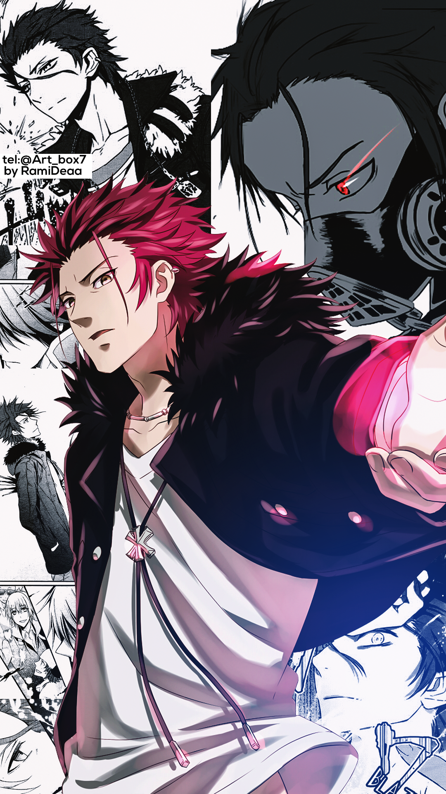
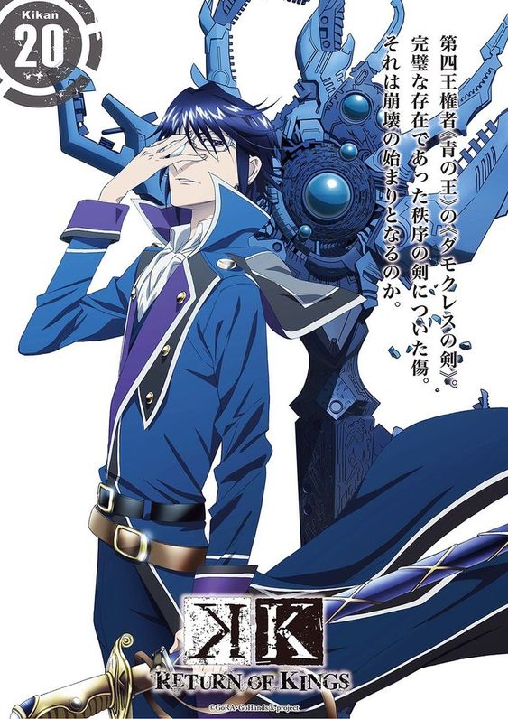
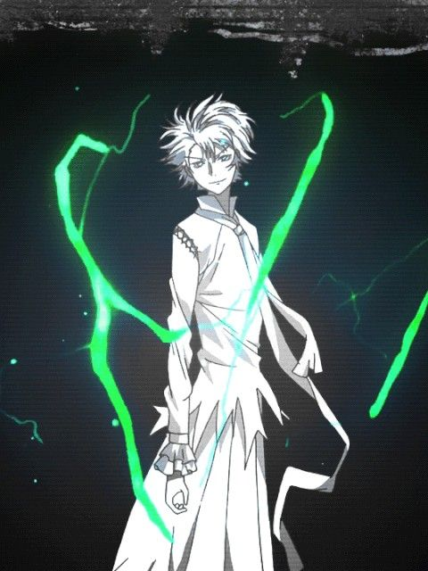
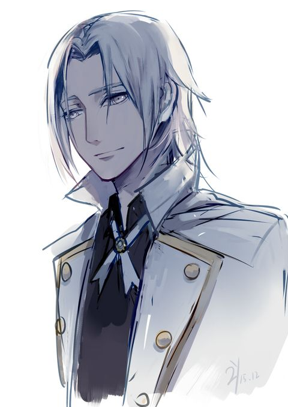
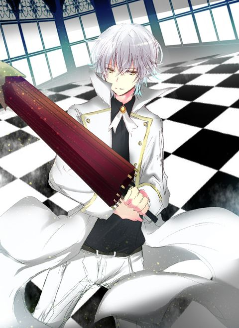

Foto Raja |
Profil Raja |
|  | Nama : Mikoto Suoh (Red King) Jabatan : Kapten Faksi : HOMRA Kekuatan : Manipulasi api Tugas : Memimpin HOMRA dan melindungi anggotanya |
|  | Nama : Reisi Munakata (Blue King) Jabatan : Kapten Faksi : SCEPTER 4 Kekuatan : Kekuatan manipulasi energi biru Tugas : Melindungi perdamaian dan menjaga kota dari kekacauan |
|  | Nama : Nagare Hisui (Green King) Jabatan : Kapten Faksi : Daikaku Kokujōji Kekuatan : Kemampuan manipulasi energi hijau Tugas : Menciptakan dunia yang baru tanpa kekerasan dan konflik |
 |
Nama : Daikaku Kokujōj (Yellow King) Jabatan : Kapten Faksi : Daikaku Kokujōji Kekuatan : Kemampuan manipulasi energi kuning Tugas : Menjaga keseimbangan kekuatan di antara tujuh raja dan mencegah peperangan yang merusak |
|  | Nama : Adolf K. Weismann (Silver King) Jabatan : Kapten Faksi : SELAYAWEISS Kekuatan : Immortalitas, manipulasi elemen perak Tugas : Mempertahankan kedamaian dan mencegah konflik di antara tujuh raja |
|  | Nama : Ichigen Miwa (White King) Jabatan : Kapten Faksi : unknown Kekuatan : Kemampuan manipulasi memori, kemampuan khusus Neko Tugas : unknown |